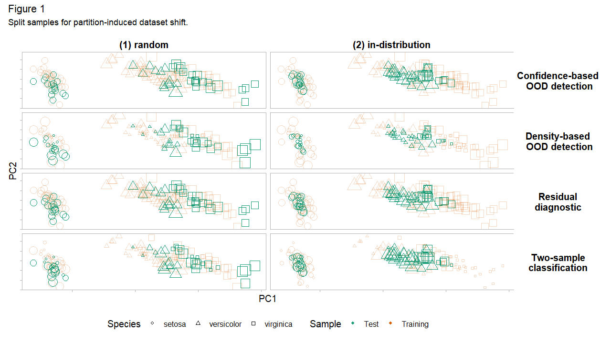
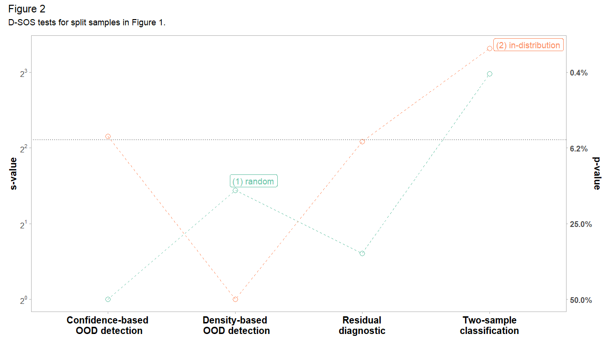

vignettes/motivation.Rmd
motivation.RmdNote that this vignette is adapted from the arXiv paper
Suppose we fit a predictive model on a training set and predict on a test set. Dataset shift (Quionero-Candela et al. 2009; Moreno-Torres et al. 2012; Kelly, Hand, and Adams 1999), also known as data or population drift, occurs when training and test distributions are not alike. This is essentially a sample mismatch problem. Some regions of the data space are either too sparse or absent during training and gain importance at test time. We want methods to alert us to the presence of unexpected inputs in the test set (Rabanser, Günnemann, and Lipton 2019). To do so, a measure of divergence between training and test set is required. Can we not simply use the many modern off-the-shelf multivariate tests of equal distributions for this?
One reason for moving beyond tests of equal distributions is that they are often too strict. They require high fidelity between training and test set everywhere in the input domain. However, not all changes in distribution are a cause for concern – some changes are benign. Practitioners distrust these tests because of false alarms. Polyzotis et al. (2019) comment:
statistical tests for detecting changes in the data distribution […] are too sensitive and also uninformative for the typical scale of data in machine learning pipelines, which led us to seek alternative methods to quantify changes between data distributions.
Even when the difference is small or negligible, tests of equal distributions reject the null hypothesis of no difference. An alarm should only be raised if a shift warrants intervention. Retraining models when distribution changes are benign is both costly and ineffective. To tackle these challenges, we propose D-SOS instead. Monitoring model performance and data quality is a critical part of deploying safe and mature models in production and D-SOS provides robust and actionable tests for this (Paleyes, Urma, and Lawrence 2020; Klaise et al. 2020; Sculley et al. 2014; Breck et al. 2017).
In comparing the test set to the training set, D-SOS pays more attention to the regions –- typically, the outlying regions –- where we are most vulnerable. To confront false alarms, it uses a robust test statistic, namely the weighted area under the receiver operating characteristic curve (WAUC). The weights in the WAUC (Li and Fine 2010) discount the safe regions of the distribution. To the best of our knowledge, this is the first time that the WAUC is being used as a test statistic in this context. The goal of D-SOS is to detect non-negligible adverse shifts. This is reminiscent of noninferiority tests (Wellek 2010), widely used in healthcare to determine if a new treatment is in fact not inferior to an older one. Colloquially, the D-SOS null hypothesis holds that the new sample is not substantively worse than the old sample, and not that the two are equal.
D-SOS moves beyond tests of equal distributions and lets users specify which notions of outlyingness to probe. The choice of the score function plays a central role in formalizing what we mean by worse. The scores can come from out-of-distribution detection, two-sample classification, uncertainty quantification, residual diagnostics, density estimation, dimension reduction, and more. While some of these scores are underused and underappreciated in two-sample tests, they are valid and can be more informative in some cases. The main takeaway is that given a generic method that assigns an outlier score to a data point, D-SOS uplifts these scores and turns them into a two-sample test for no adverse shift.
For illustration, we apply D-SOS to the canonical iris dataset (Anderson 1935). The task is to classify the species of Iris flowers based on \(d=4\) covariates (features) and \(n=50\) observations for each species. The first two principal components of iris show that these species cluster together. We show how D-SOS helps diagnose false alarms. We highlight that (1) changes in distribution do not necessarily hurt predictive performance, and (2) points in the densest regions of the distribution can be the most difficult – unsafe – to predict.
For the subsequent tests, we split iris into 2/3 training and 1/3 test set. Figure 1 displays these train-test pairs, split according to four partitioning strategies. These splits correspond to (1) random sampling, (2) stratified sampling by species, (3) in-distribution (most dense) examples in the test set, and (4) out-of-distribution (least dense) examples in the test set. Looking down each column in Figure 1 shows the same split for different D-SOS tests. The shape and color of each point map to the species and whether it is assigned to the training or test set and its size is proportional to its importance in a given test.

We consider four D-SOS tests of no adverse shift. The outlier score for each test determines its type. For two-sample classification, define this score as the probability of belonging to the test set. For density-based out-of-distribution (OOD) detection, the score is the isolation score, which is (roughly) inversely related to the local density. For residual diagnostics, it is the out-of-sample (out-of-bag) prediction error from random forests. Finally, for confidence-based OOD detection (prediction uncertainty), it is the standard error of the mean prediction. Only the first notion of outlyingness – two-sample classification – pertains to modern tests of equal distributions; the others capture other meaningful notions of adverse shifts. For all these scores, higher is worse: higher scores indicate that the observation is diverging from the desired outcome or that it does not conform to the training set. Looking across each row in Figure 1 shows the same D-SOS test for different sample splits.
How do the sample splits in Figure 1 fare with respect to these D-SOS tests? Let \(s\) and \(p\) denote \(s-\)value and \(p-\)value. The results are reported on the \(s = -\, \log_{2}(p)\) scale because it is intuitive and lends itself to comparison. An \(s-\)value of \(k\) can be interpreted as seeing \(k\) independent coin flips with the same outcome – all heads or all tails – if the null is that the coin is fair (Greenland 2019). This conveys how incompatible the data is with the null hypothesis. For plotting, we winsorize (clip) \(s-\)values to a low and high of 1 and 10 respectively. We also display a secondary y-axis with the \(p-\)value as a cognitive bridge.
In Figure 2, the case with (1) random sampling exemplifies the type of false alarms we want to avoid. Two-sample classification, standing in for tests of equal distributions, is incompatible with the null of no adverse shift (a \(s-\)value of around 8). But this shift does not carry over to the other tests. Residual diagnostics, density-based and confidence-based OOD detection are all fairly compatible with the view that the test set is not worse. Had we been entirely reliant on two-sample classification, we may not have realized that this shift is essentially benign. Tests of equal distributions alone give a narrow perspective on dataset shift. Contrast (1) random with (2) stratified sampling. When stratified by species, all the tests are compatible with the null of no adverse shift.

We expect the density-based OOD detection to waive the (3) in-distribution test set and flag the (4) out-of-distribution one. Indeed, the results in Figure 2 concur. We might be tempted to conclude that the in-distribution observations are safe, and yet, the tests based on residual diagnostics and confidence-based OOD detection (prediction uncertainty) are fairly incompatible with this view. This is because some of the in-distribution (densest) points are concentrated in a region where the classifier does not discriminate well: the species ‘versicolor’ and ‘virginica’ overlap to some degree. That is, the densest observations are not necessarily safe. Density-based OOD detection glosses over this. The trouble may very well come from the in-distribution points. D-SOS offers a more holistic perspective of dataset shift because it borrows strength from these complementary notions of outlyingness.
The point of this exercise is twofold. First, we stress the limits of tests of equal distributions when testing for dataset shift. They are unable, by definition, to detect whether the shift is benign or not. Second, we propose a family of tests based on outlier scores, D-SOS, which offers a more holistic view of dataset shift. D-SOS is flexible and can be easily extended to test for other modern notions of outlyingness such as trust scores (Jiang et al. 2018). We hope this encourages more people to test for adverse shifts.
Anderson, Edgar. 1935. “The Irises of the Gaspe Peninsula.” Bull. Am. Iris Soc. 59: 2–5.
Breck, Eric, Shanqing Cai, Eric Nielsen, Michael Salib, and D Sculley. 2017. “The Ml Test Score: A Rubric for Ml Production Readiness and Technical Debt Reduction.” In 2017 Ieee International Conference on Big Data (Big Data), 1123–32. IEEE.
Greenland, Sander. 2019. “Valid P-Values Behave Exactly as They Should: Some Misleading Criticisms of P-Values and Their Resolution with S-Values.” The American Statistician 73 (sup1): 106–14.
Jiang, Heinrich, Been Kim, Melody Y Guan, and Maya R Gupta. 2018. “To Trust or Not to Trust a Classifier.” In NeurIPS, 5546–57.
Kelly, Mark G, David J Hand, and Niall M Adams. 1999. “The Impact of Changing Populations on Classifier Performance.” In Proceedings of the Fifth Acm Sigkdd International Conference on Knowledge Discovery and Data Mining, 367–71.
Klaise, Janis, Arnaud Van Looveren, Clive Cox, Giovanni Vacanti, and Alexandru Coca. 2020. “Monitoring and Explainability of Models in Production.” arXiv Preprint arXiv:2007.06299.
Li, Jialiang, and Jason P Fine. 2010. “Weighted Area Under the Receiver Operating Characteristic Curve and Its Application to Gene Selection.” Journal of the Royal Statistical Society: Series C (Applied Statistics) 59 (4): 673–92.
Moreno-Torres, Jose G, Troy Raeder, Rocío Alaiz-Rodríguez, Nitesh V Chawla, and Francisco Herrera. 2012. “A Unifying View on Dataset Shift in Classification.” Pattern Recognition 45 (1): 521–30.
Paleyes, Andrei, Raoul-Gabriel Urma, and Neil D Lawrence. 2020. “Challenges in Deploying Machine Learning: A Survey of Case Studies.” arXiv Preprint arXiv:2011.09926.
Polyzotis, Neoklis, Martin Zinkevich, Sudip Roy, Eric Breck, and Steven Whang. 2019. “Data Validation for Machine Learning.” Proceedings of Machine Learning and Systems 1: 334–47.
Quionero-Candela, Joaquin, Masashi Sugiyama, Anton Schwaighofer, and Neil D Lawrence. 2009. Dataset Shift in Machine Learning. The MIT Press.
Rabanser, Stephan, Stephan Günnemann, and Zachary Lipton. 2019. “Failing Loudly: An Empirical Study of Methods for Detecting Dataset Shift.” In Advances in Neural Information Processing Systems, 1394–1406.
Sculley, David, Gary Holt, Daniel Golovin, Eugene Davydov, Todd Phillips, Dietmar Ebner, Vinay Chaudhary, and Michael Young. 2014. “Machine Learning: The High Interest Credit Card of Technical Debt.”
Wellek, Stefan. 2010. Testing Statistical Hypotheses of Equivalence and Noninferiority. CRC Press.